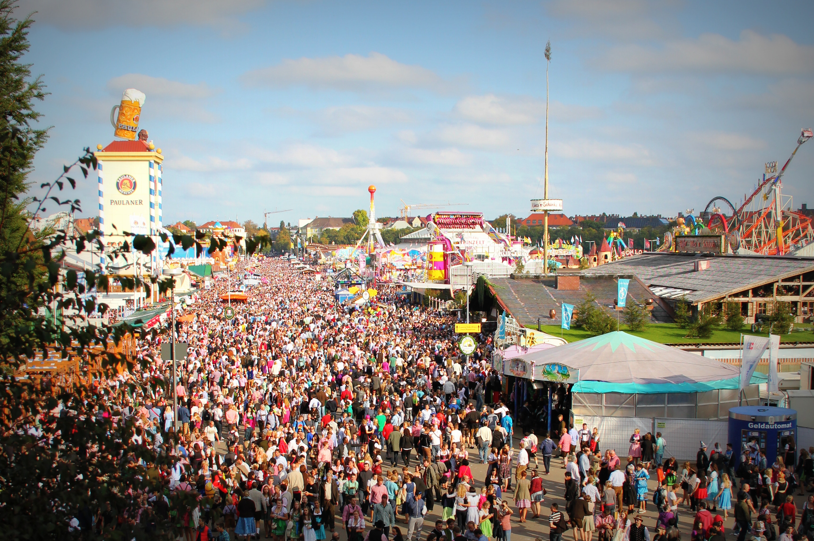
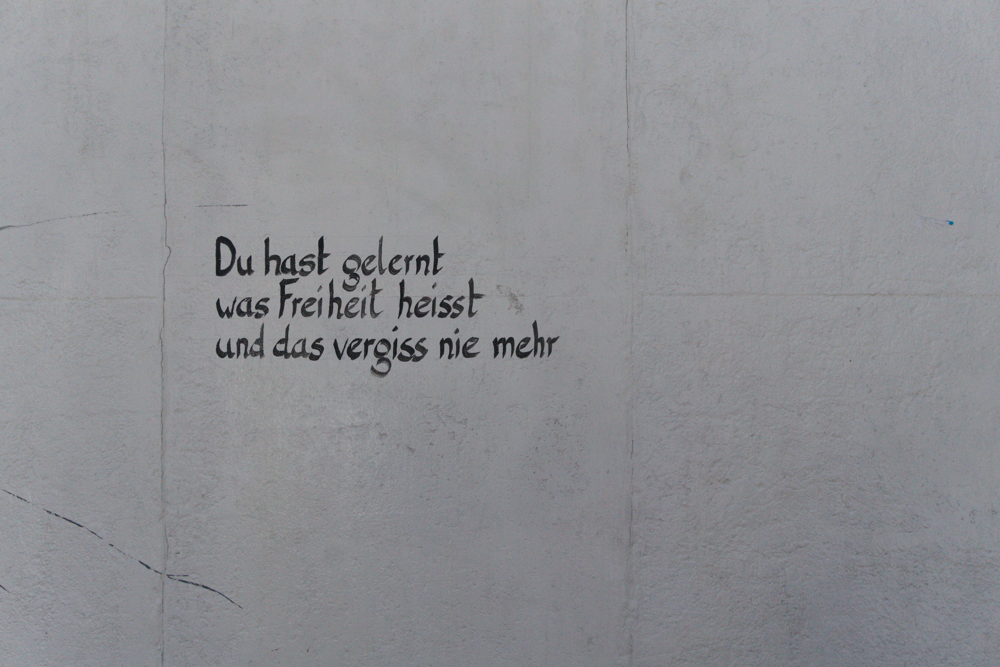

Germany is well-known for being a country with an extensive and incredible history. Since the end of World War II, the country has recovered completely, becoming the top country in the European Union, and the 4th in the world. Despite being a technologically advanced country that counts with amazing new places to discover, historical places remain the most visited in the country. Such a rich history cannot be left aside, the reason why we encourage you to visit some of these breath-taking places:
Oktoberfest is a very popular festival that takes place from mid-September through the beginning of October. This infamous festival attracts tourists from all over Munich. So much so that Munich’s economy generated more than 1.2 billion Euros from Oktoberfest 2018. According to the article “Oktoberfest in Numbers: An Inside Look at Germany’s Multi-Billion Business”, the festival brings in more than six million people every year. With these types of revenues coming in annually it also presents Germany with an opportunity for job creation. With such an influx of people in Munich during the festival, they need people working to keep up with everything.
Castles are a major tourist attraction in Germany that brings in people from all over to marvel at the magnificent architecture and history of the beautiful castles. According to the article “Cash for Castles in Germany” written by David Crossland, states that “A large number of Belgians, Dutch, and even British tourists are defying the recession and flocking to the castle to marvel at its original medieval halls, suits of armor, and tapestries.” This tells us that people from all over travel to tour Germany's many castles. In the same article Crossland also states, “Tourism is up at many historic monuments across Germany—Marksburg castle expects 145,000 visitors in 2009, up from 142,000 last year, and Reinstein, another privately owned castle that guards the Rhine near the town of Bingen, is confident it will crack 30,000 this year, up from 2008.” The steady increase of visitors each year generates more money for Germany boosting its economy.
Another major attraction that should be visited is the Berlin wall. The remaining wall runs 1.4 kilometers long. On the west side of the wall, one can see the hundreds of murals painted by artists living on the west side of the wall. According to the article “The Berlin Wall Memorial Site,” the author states, “976,000 people visited the Berlin Memorial Site in 2016.” Although this memorial site is free and doesn’t generate money it attracts a lot of people that will spend their money in surrounding areas. Such as gift shops, restaurants, and hotels.
While in Germany, tourists need to be able to quickly and safely travel around the cities. This country is safe for women to travel solo and walk around in the streets and feel safe. One of the best ways to know a city is walking, and Germany has many rural attractions that are worth the walk, but if you are planning to go farther away from the city, here are some options.
Public transportation in Germany is a major part of this country, and it is used by not only the tourists but by many citizens too. Uber and other forms of public transportation have been ranked to be safe. Police officers and other types of protection are found in transportations of all kinds. Here you can book your train rides and buy tickets. Whether you want them at that moment or want to book them in advance. Depending on how far you go and where your destination with the cost will vary.
Another way of transportation that tourists (and Germans) prefer to explore the cities is bikes. There are many spots where you can rent one of these and take a bike tour across Germany and the tour guides will inform you about the places you will go and what you will see. Germany is a country where bike lanes work very efficiently and drivers happily share the road with bikers.
This translates to the federal motorway. People can also utilize this as a means of transportation from one area to another. The thing about the autobahn is that it is recommended that you go approximately 80 mph, however, it is not illegal to go faster than that. On the other hand in some urban or populated areas, the recommended speed limit goes lower.
Germany has so many great places to go and explore. With museums, parks, and many other family-friendly activities to go and try out. Also, Germany has hang-out places such as clubs and bars which are all included in the German nightlife for young adult tourists. While planning a trip to this country, be sure to enjoy different festivals and activities throughout the cities.